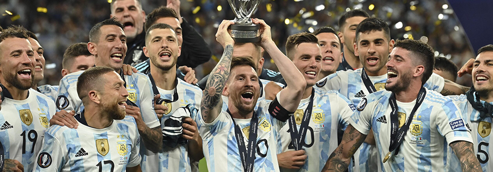

Argentina campeón de la Finalissima
La Albiceleste derrotó categóricamente 3-0 a Italia y se alzó con el trofeo. Es el segundo título en la Era Scaloni, y ahora van por la del mundo...
El seleccionado argentino superó hoy a Italia por 3-0 tras una gran exhibición de fútbol y se consagró campeón de la Finalissima en el mítico estadio Wembley de Londres.
Lautaro Martínez, tras la asistencia de un gigante Lionel Messi, Ángel Di María, a los 27 y 45 minutos del primer tiempo respectivamente, y Paulo Dybala sobre el final marcaron los goles del campeón de América, que levantó un nuevo trofeo a menos de seis meses del Mundial de Qatar 2022.
El equipo dirigido por Lionel Scaloni, que estiró su racha invicta a 32 partidos, construyó el triunfo a partir de una gran jugada del líder y capitán Messi, quien asistió a Lautaro para el 1-0 después de una gran acción individual.
Luego, y justo antes del descanso, el goleador del ciclo con 20 tantos dejó solo a Di María, quien definió con su marca registrada para el 2-0.
En el minuto 49 de la segunda etapa y cuando Argentina se floreaba, el ingresado Paulo Dybala coronó la victoria con una gran definición con un tiro cruzado.
Como sucedió hace menos de un año en el estadio Maracaná, la "Scaloneta" se hizo gigante en la mítica Catedral del Fútbol, superó al vigente campeón de Europa y conquistó un nuevo título que aumenta la ilusión en el camino hacia Qatar.
Con una gran actuación de Messi, quien sigue vigente a poco de cumplir 35 años, Lautaro Martínez y Di María, la "Albiceleste" pasó una exigente prueba ante un rival herido por su ausencia mundialista pero con la base de los futbolistas que habían conquistado la Eurocopa en ese mismo escenario ante Inglaterra y estuvo 37 partidos invicto hasta octubre de 2021.
▪️ Un 3-0 le bastó a la Albiceleste para levantar un nuevo trofeo con la generación liderada por Lionel Messi.
— Copa América (@CopaAmerica) June 1, 2022
▪️ La selección @Argentina superó su propio récord de partidos consecutivos sin perder.#Finalissima #VibraElContinente